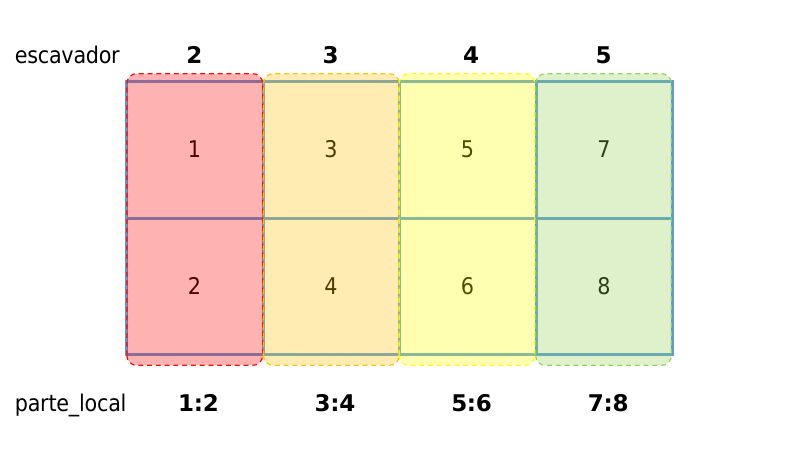
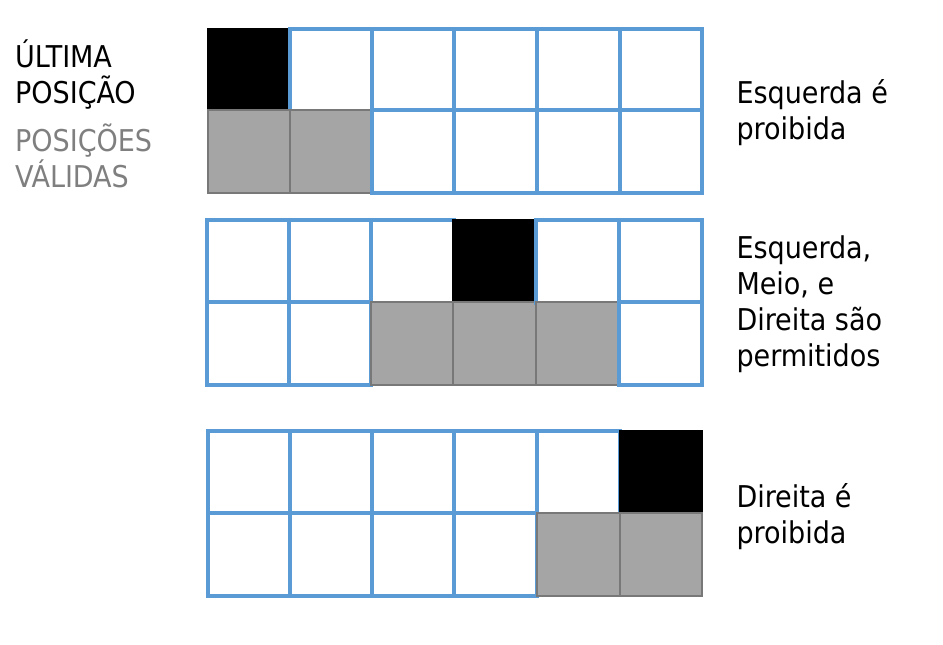

@everywhere using SharedArrays
terreno = SharedMatrix{Int}((4,16), pids = workers())
@everywhere function ver_parte_local!(terreno)
parte_local = localindices(terreno)
println("suricate '$(myid())' trabalha em '$(parte_local)'")
terreno[parte_local] .= myid()
end
for w in workers()
Distributed.@spawnat w ver_parte_local!(terreno)
end
terreno15 SharedArrays
Daisy precisava ganhar mais dinheiro, então ela se candidatou a um novo emprego, para escavadeira de túnel.
.jpg)
15.1 parte_local
Daisy não trabalhava sozinha, ela era responsável por uma pequena região, de uma grande área, compartilhada com outros suricates. Sua nova chefe, a suricata Jessie, controlava quais regiões cada suricate é autorizado a trabalhar, e cada região eram chamada de parte_local, pois cada suricate só trabalha na sua parte.
Daisy já tinha fama de programadora, assim foi convocada por Jessie a escrever um código para verificar que cada suricate esta nos seus limites.
Nessa situação, Daisy precisou usar outro pacote, o SharedArrays.jl, pois ela conseguiria representar a área total de excavação como uma variável compartilhada, no qual cada suricate excavador pode ter acesso.
Sintaxe:
localindices
Matrizes em Julia armazenam os valores de forma continua na memória como na figura abaixo. 
localindices retornou os indices implicitos de cada valor, e não as linhas e colunas.
Sintaxe:
myid
Todos os processos podem acessar e editar todos os valores da variável terreno porque SharedArrays gerencia a memória para que você não tenha que escrever um código para isso. Nesse exemplo, cada processo apenas anotou seu id, obtido com a função myid.
Como a área possuia 16 locais de excavação e 4 trabalhadores, a distribuição de tarefas era direta, com cada suricate foi designado para 4 locais.
15.2 Túneis
Agora que cada suricate conhece seus limites, eles podem começar a escavação dos seus túneis. No entanto os códigos de Daisy tem um requisito muito forte: a representação do túnel em seus códigos não pode ter lacunas entre as camadas, ou seja, cada camada deve ser conectada à anterior.

Daisy chegou numa solução simples, baseada na sua experiência em anotar dias de que poderia sair de casa, ela vai criar uma matriz de zeros representando o terreno, e as áreas escavadas, ela indicou usando 1. Por enquanto Daisy só tem um protótipo, ele funciona apenas para testar que a construção do túnel esta funcionando como deveria no desenho.
Sintaxe:
findfirst
Para encontrar o 1 na camada superior, Daisy só precisar a posição do único 1 que deverá estar armazenado, para isso Daisy usou a função findfirst
# encontra o primeiro valor '4'
x = [4,3,4,4,6]
@show findfirst(x .== 4)
y = [false, false, true, false, true]
@show findfirst(y);findfirst(x .== 4) = 1
findfirst(y) = 3function escavar_tunel!(terreno)
linhas, colunas = size(terreno)
# primeira linha é a linha do solo
ponto_partida = rand(1:colunas)
terreno[1, ponto_partida] = one(eltype(terreno))
for i in 2:linhas
ultima_posicao = findfirst( terreno[i-1,:] )
esquerda = ultima_posicao - 1
meio = ultima_posicao
direita = ultima_posicao + 1
if esquerda < 1
possiveis_posições = [direita, meio]
elseif direita > colunas
possiveis_posições = [meio, esquerda]
else
possiveis_posições = [esquerda, meio, direita]
end
local_para_escavar = rand(possiveis_posições)
terreno[i, local_para_escavar] = one(eltype(terreno))
end
end
terreno = zeros(Bool, 10, 6)
escavar_tunel!(terreno)
# Somente para visualização no terminal
using SparseArrays
sparse(terreno)10×6 SparseMatrixCSC{Bool, Int64} with 10 stored entries:
1 ⋅ ⋅ ⋅ ⋅ ⋅
1 ⋅ ⋅ ⋅ ⋅ ⋅
⋅ 1 ⋅ ⋅ ⋅ ⋅
⋅ ⋅ 1 ⋅ ⋅ ⋅
⋅ ⋅ 1 ⋅ ⋅ ⋅
⋅ 1 ⋅ ⋅ ⋅ ⋅
1 ⋅ ⋅ ⋅ ⋅ ⋅
⋅ 1 ⋅ ⋅ ⋅ ⋅
1 ⋅ ⋅ ⋅ ⋅ ⋅
1 ⋅ ⋅ ⋅ ⋅ ⋅15.3 Terreno Rochoso
Em um certo dia, o local da escavação era mais rochoso que o esperado, e ao mesmo tempo, um dos suricates ficou doente e não podia trabalhar, resultando em uma distribuição desigual de tarefas.
Daisy foi chamada as pressas, seu protótipo precisa funcionar, e ainda levar em conta a zona de trabalho (parte_local) de cada suricate. Daisy sabia que usar os indices implicitos do SharedArrays não seria útil, a solução foi cada suricate informar carregar consigo em um papel qual sua região de trabalho, ou seja, a parte_local será uma variável de entrada.
@everywhere function escavar_tunel!(terreno, parte_local)
qtd_camadas = size(terreno, 1)
# primeira linha é a linha do solo
tamanho_região = length(parte_local)
ponto_partida = parte_local[rand(1:tamanho_região)]
terreno[1, ponto_partida] = one(eltype(terreno))
for i in 2:qtd_camadas
ulitma_camada = terreno[i-1, parte_local]
idx_local = findfirst(ulitma_camada)
ultima_posicao = parte_local[idx_local]
esquerda = ultima_posicao - 1
meio = ultima_posicao
direita = ultima_posicao + 1
if esquerda < parte_local[1]
possiveis_posições = [direita, meio]
elseif direita > parte_local[end]
possiveis_posições = [meio, esquerda]
else
possiveis_posições = [esquerda, meio, direita]
end
local_para_escavar = rand(possiveis_posições)
terreno[i, local_para_escavar] = one(eltype(terreno))
end
return nothing
end
# suricate `4` ficou doente
# então suricate `2` precisou compensar
rochoso = SharedMatrix{Bool}((16,8+3+6), pids = [2,3,5])
escavadores = [(nome=2, parte_local=1:8),
(nome=3, parte_local=9:11),
(nome=5, parte_local=12:17)
]
for s in escavadores
@spawnat s.nome escavar_tunel!(rochoso, s.parte_local)
end
sparse(rochoso)
rmprocs()